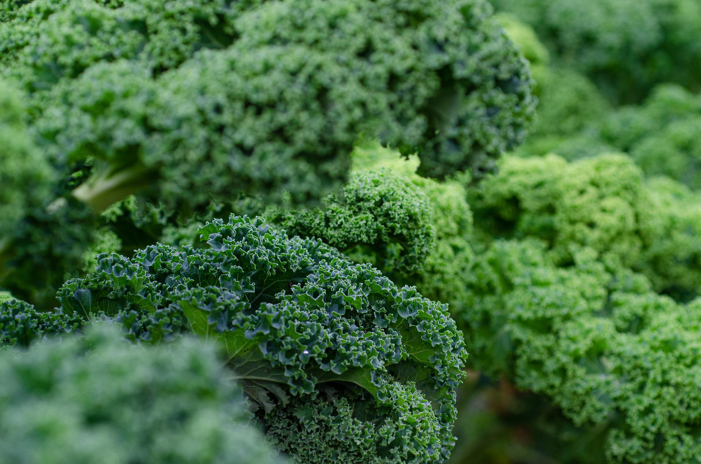
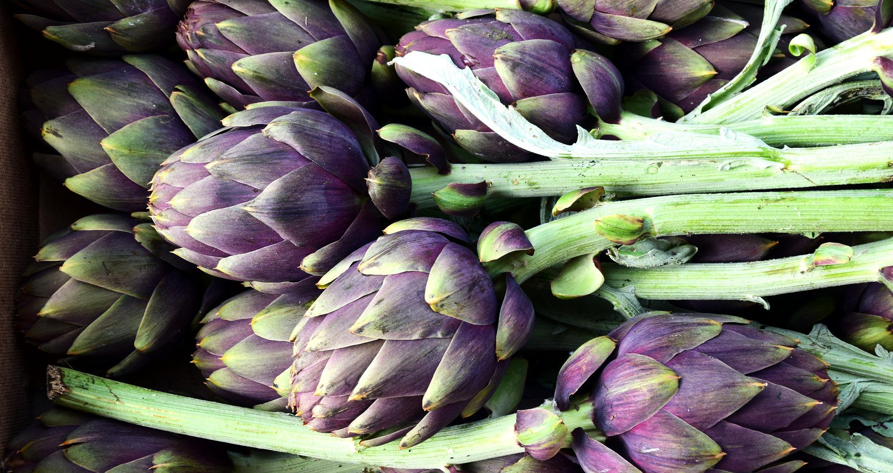
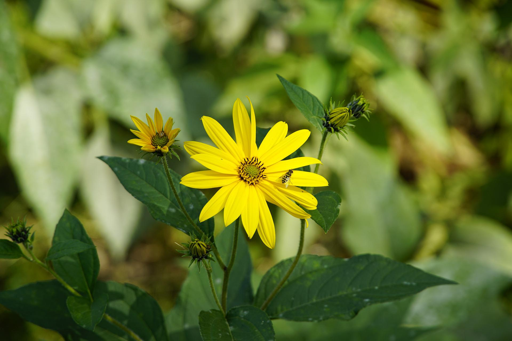
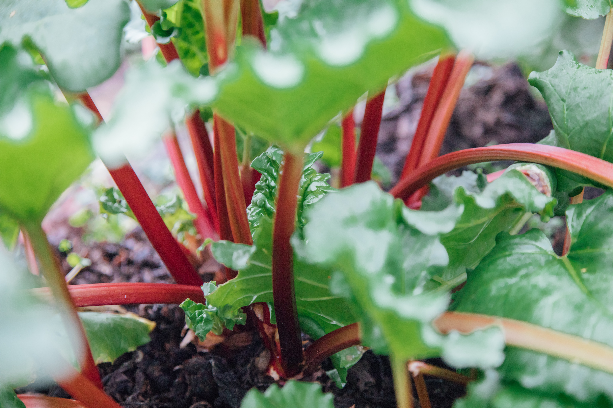
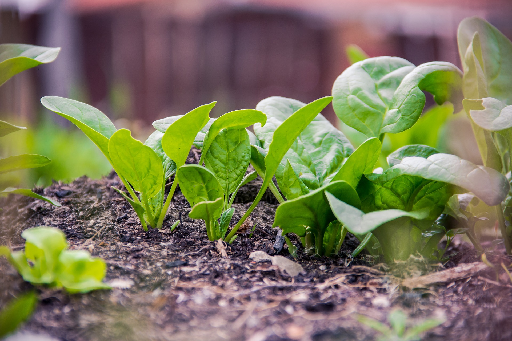
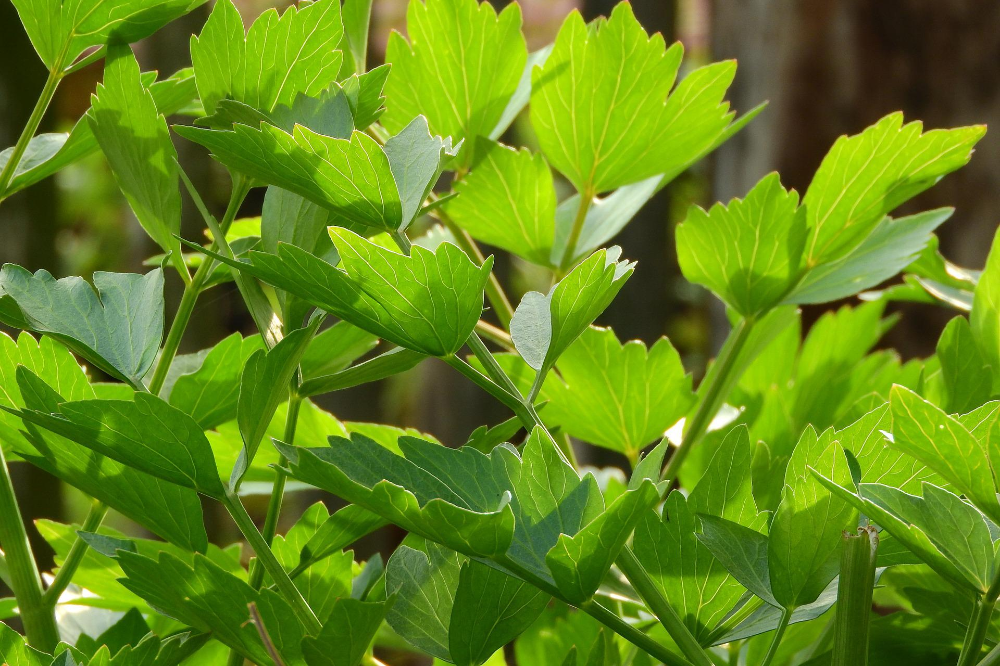

Perennial vegetables to grow
Growing more perennial vegetables in your veg patch is a sustainable way to provide food for the kitchen. Perennials are plants that have a lifespan that is longer than two years and will continue to give you a crop year after year.
Perennials save both precious time and energy compared to all the sowing, planting, and raising new plants that is needed every year when growing annuals.
Perennials can also be help to maintain soil structure as they don't need to be dug up and the soil is left undisturbed.
Here are some of my favourite perennial vegetables to get started with:
1. Brassicas (such as kale and cabbage)
Wild cabbage (the common ancestor of the Brassica family) is a perennial and although typically grown as annuals, there are a number of nutritious perennial brassica cultivars.

2. Globe artichokes
Globe artichokes are ornamental perennial plants that make a fantastic addition to the veg garden or flower border. Grown for their flavoursome flower buds.

3. Jerusalem artichokes
Jerusalem artichokes are easy-to-grow plants that produce a large crop of underground edible root tubers, for harvesting in autumn and winter. The tubers give a sweet, nutty flavour to soups, stews and salads.

4. Asparagus
Asparagus can be expensive to buy and has excellent flavour when picked and eaten fresh. Asparagus takes two years to mature from planting one-year-old crowns but can continue to provide a harvest for up to 20 years.

5. Rhubarb
Rhubarb is a hardy perennial that is very easy to grow and crops well for many years. Reknowned for its use in pies and crumbles, rhubarb makes a decorative addition to any vegetable garden.

6. Perpetual spinach
Perpetual spinach is another easy to grow vegetable that, as the name implies, will keep producing tasty and nutrious leaves all year round.

7. Lovage
Lovage has very attractive foliage and is as at home among ornamental plants in the border as it is in the vegetable garden. It has a flavour similar to celery and is a worthy addition to salads, soups, and stews.
